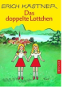

Luise, neun Jahre alt und ziemlich frech, muss den Sommer fern von Wien in einem Ferienheim verbringen. Dort staunt sie nicht schlecht, als sie die brave Lotte aus Munchen trifft: Denn die sieht genauso aus wie sie! Die Madchen beschlie?en, dem Geheimnis ihrer Ahnlichkeit auf den Grund zu gehen, und tauschen kurzerhand die Rollen: Luise fahrt als Lotte zuruck nach Munchen, Lotte als Luise nach Wien. Im Gepack haben sie einen pfiffigen Plan. Das doppelte Lottchen wurde in Deutschland wie im Ausland mehrfach mit gro?em Erfolg verfilmt.